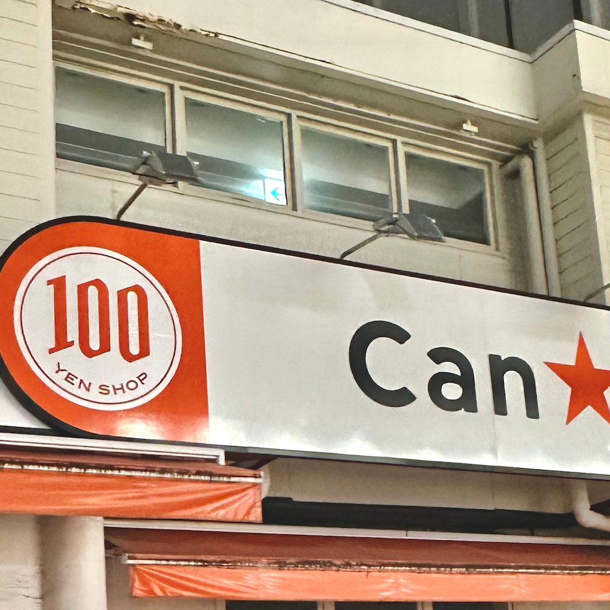

路上観察
1枚目
When … 10/13
Where … 大船仲通商店街 近辺
Who … 自分
What … はかた商店(大船店)さん 原価楽園
歩いてきた人の目に入りやすいように、突き出し看板に店名や店舗のロゴを書いているお店が多い中、
「原価楽園」のインパクトがすごかった。ドリンクが原価で楽しめる。
2枚目
When … 10/13
Where … 大船仲通商店街 近辺
Who … 自分
What … 西友(大船店)さん ロゴ
赤一色のロゴ。何を指しているかがわからない。シンプルな正方形。
3,4枚目
When … 10/13
Where … 大船仲通商店街 近辺
Who … 自分
What … 1枚目：Can Do(大船店)さん、2枚目：焼肉東京BeeN(大船店)さん お金のマーク
2枚とも日本の硬貨を表している。1枚目は百均だとわかりやすいし、2枚目はサーバーボール(ハイボール)が500円で飲めるのかな？と想像しやすい。
